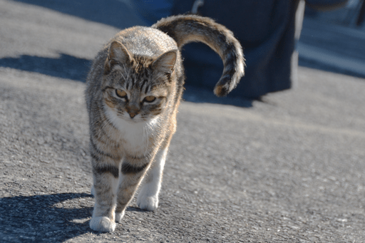
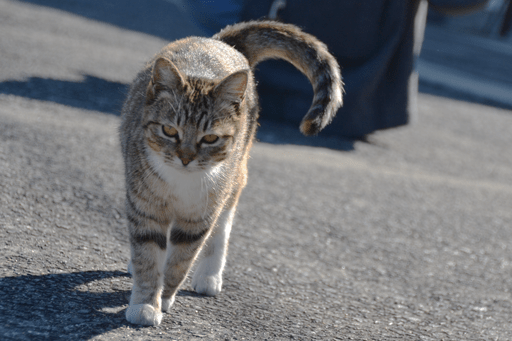
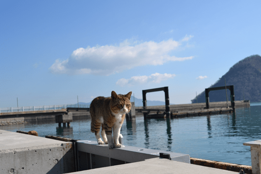
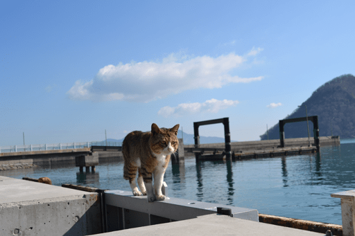
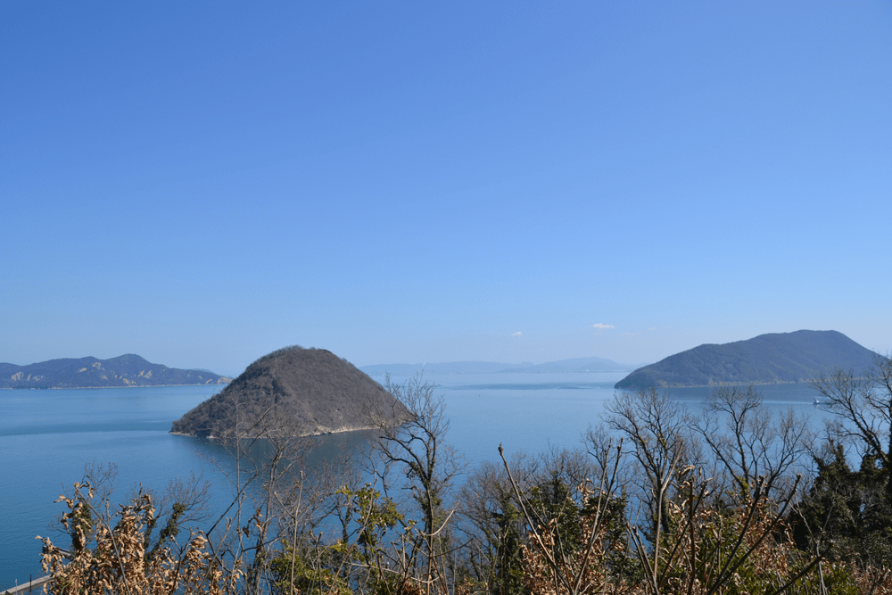
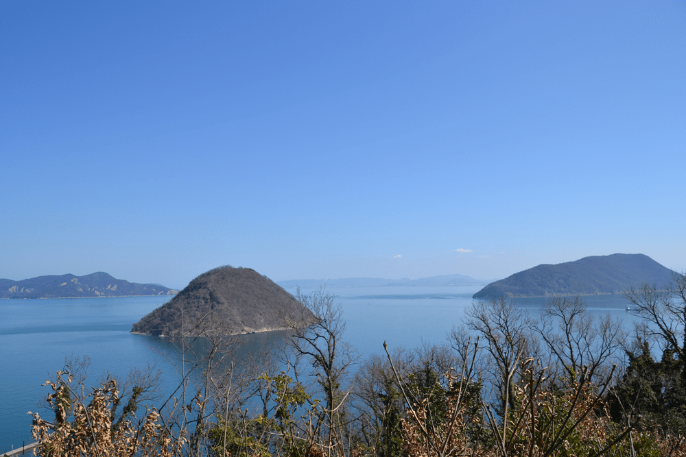
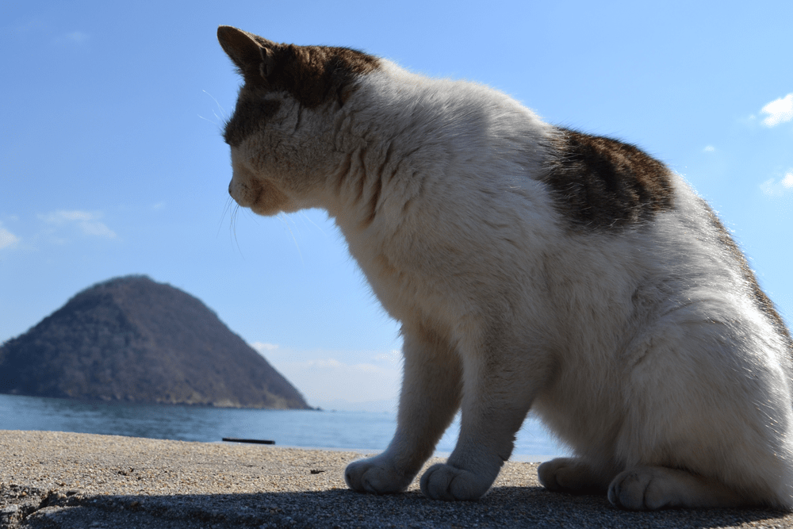
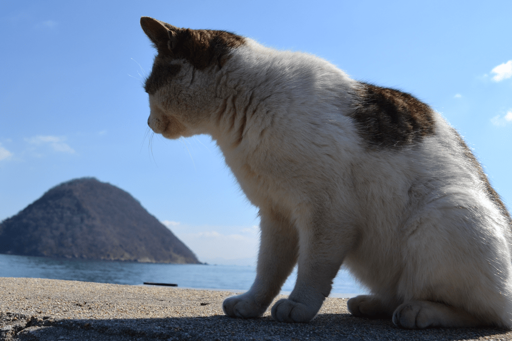

0
a

佐柳島は、瀬戸内海中央付近の島です。
島にはたくさんの猫が住んでいることから、猫島としても人気です。
佐柳島の猫たちの様子を写真でご紹介します。
 



 



 


 



JR予讃線多度津駅 → 多度津港 → フェリー（約５０分、片道７８０円）
| 便 | 多度津 | 高見島 | 佐柳本浦 | 佐柳長崎 |
|---|---|---|---|---|
| 1 | 6:55 | 7:20 | --- | 7:50 |
| 2 | 9:05 | 9:30 | 9:55 | --- |
| 3 | 14:00 | 14:25 | 14:50 | 15:15 |
| 4 | 16:20 | 16:45 | 17:10 | --- |
| 便 | 佐柳長崎 | 佐柳本浦 | 高見島 | 多度津 |
|---|---|---|---|---|
| 1 | 7:50 | 8:05 | 8:30 | 8:55 |
| 2 | --- | 10:00 | 10:25 | 10:50 |
| 3 | 15:05 | 15:25 | 15:50 | 16:15 |
| 4 | --- | 17:10 | 17:35 | 18:00 |